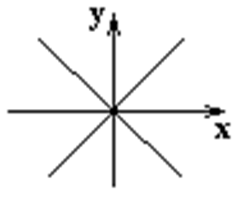
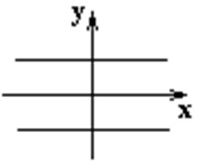

6.5 Уравнения вырожденных кривых второго порядка
- Уравнение двух пересекающихся прямых – уравнения двух пересекающихся прямых;

- Уравнение двух параллельных прямых – уравнения двух параллельных прямых;

-
Уравнение двух
соприкасающихся с осью OX прямых
– уравнение двух прямых, совпадающих
с осью
 .
.